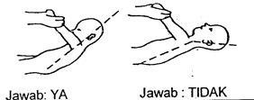
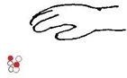
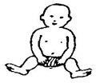

Kuesioner Praskrining untuk Bayi 9 bulan
- Pada posisi bayi telentang, pegang kedua tangannya lalu tarik perlahan-lahan ke posisi clucluk. Dapatkah bayi mempertahankan lehernya secara kaku seperti gambar di sebelah kiri ? Jawab TIDAK bila kepala bayi jatuh kembali seperti gambar sebelah kanan

- Pernahkah anda melihat bayi memindahkan mainan atau kue kering dari satu tangan ke tangan yang lain? Benda-benda panjang seperti sendok atau kerincingan bertangkai tidak ikut dinilai.
- Tarik perhatian bayi dengan memperlihatkan selendang, sapu tangan atau serbet, kemudian jatuhkan ke lantai. Apakah bayi mencoba mencarinya? Misalnya mencari di bawah meja atau di belakang kursi?
- Apakah bayi dapat memungut dua benda seperti mainan/kue kering, dan masing- masing tangan memegang satu benda pada saat yang sama? Jawab TIDAK bila bayi tidak pernah melakukan perbuatan ini.
- Jika anda mengangkat bayi melalui ketiaknya ke posisi berdiri, dapatkah ia menyangga sebagian berat badan dengan kedua kakinya? Jawab YA bila ia mencoba berdiri dan sebagian berat badan tertumpu pada kedua kakinya.
- Dapatkah bayi memungut dengan tangannya benda-benda kecil seperti kismis, kacang-kacangan, potongan biskuit, dengan gerakan miring atau menggerapai seperti gambar ?

- Tanpa disangga oleh bantal, kursi atau dinding, dapatkah bayi duduk sendiri selama 60 detik?

- Apakah bayi dapat makan kue kering sendiri?
- Pada waktu bayi bermain sendiri dan anda diam-diam datang berdiri di belakangnya, apakah ia menengok ke belakang seperti mendengar kedatangan anda? Suara keras tidak ikut dihitung. Jawab YA hanya jika anda melihat reaksinya terhadap suara yang perlahan atau bisikan.
- Letakkan suatu mainan yang dinginkannya di luar jangkauan bayi, apakah ia mencoba mendapatkannya dengan mengulurkan lengan atau badannya?